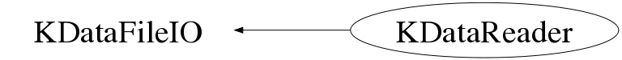

class KDataReader: public KDataFileIO
KDataReader.cxx KDataStructure Author: Adam Cox <mailto:adam.cox@ik.fzk.de> on 4/30/10. * Copyright 2010 Karlsruhe Institute of Technology. All rights reserved. This class reads in an KDS file and provides some basic functionality to access the Event data and to loop through the file, event-by-event.
Function Members (Methods)
public:
protected:
| virtual void | KDataFileIO::Delete() |
| TFile* | KDataFileIO::OpenFileForReading(const Char_t* name) |
| TFile* | KDataFileIO::OpenFileForWriting(const Char_t* name, const Char_t* option = "recreate", const Char_t* title = "") |
private:
| KDataReader(const KDataReader& aReader) | |
| void | InitializeMembers() |
| Bool_t | OpenFile(const Char_t* fileName, KEvent** anEvent = 0) |
| KDataReader& | operator=(const KDataReader& aReader) |
| Bool_t | SetBranchAddress(KEvent** anEvent = 0) |
Data Members
protected:
| TFile* | KDataFileIO::fFile | |
| TTree* | KDataFileIO::fTree |
Class Charts
{kind=link}
{kind=link}
{kind=link}
{kind=link}

Function documentation
KDataReader(const Char_t* fileName, KEvent** anEvent = 0)
TClass::GetClass("TBits")->IgnoreTObjectStreamer(),
KDataReader(const KDataReader& aReader)
KDataReader& operator=(const KDataReader& aReader)
~KDataReader(void)
void InitializeMembers(void)
WARNING - THIS METHOD SHOULD NEVER ALLOCATE SPACE FOR POINTERS ONLY SET MEMBERS ON THE STACK TO THEIR INITIAL VALUES
Bool_t SetBranchAddress(KEvent** anEvent = 0)
Int_t GetNextEntry(void)
Int_t GetPreviousEntry(void)
Int_t GetEntry(Int_t anEntry)
will load Entry number 'anEntry' and if successful, will set the fCurrentEntry value to anEntry.
Int_t GetEntryWithGSEventNumber(Int_t anEntry)
Int_t GetNextMuonEntry(Int_t anEntry = -1)
Int_t GetPreviousMuonEntry(Int_t anEntry = -1)
Int_t GetNextBoloEntry(Int_t anEntry = -1)
Int_t GetPreviousBoloEntry(Int_t anEntry = -1)